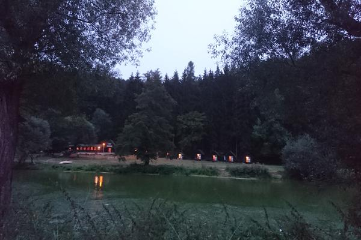

Ján Dugovič ❤ Lucie Zámostná
Budeme se brát 14. 9. 2019 v kempu na Sázavě, hodinu od Prahy
Kdy
- 13. 9. v pátek můžete dorazit, už budeme v kempu celý den chystat
- 14. 9. v sobotu bude slavnost a hostina
- 15. 9. v neděli budeme uklízet
- tvou pomoc s chystáním a uklízením oceníme bezedným džbánkem piva a spoustou jídla, co určitě zůstane
Jak se tam dostat
Autem
Doporučujeme Waze, tam jsem mapu fixnul a donaviguje tě na správnou stranu řeky.
Přesná adresa je: ALTA Kemp (U sudů), Kounice 78, 285 22 Vlastějovice, CzechiaKdo nechce Waze
- Z dálnice D1 od Prahy Exit 66 Loket anebo od Brna Exit 56 Soutice
- Do vesnice Nová Ves u Dolních Kralovic, uprostřed zahneš dolů kopcem, směr Slunné údolí
- Značka obce uprostřed polí Velká Paseka, pokračuješ rovně dolů, směrem do lesa
- Po lesní cestě pořád dolů, na konci odbočka vlevo a pak už jen rovně
- Na konci lesní cesty je malý brod přes řeku, někdo kdo ti řekne kde zaparkovat a spousta veselých bosých lidí
Bojíš se autem přes les? Klikni sem.
- Stejně jak vejš, akorát místo Nové Vsi pojedeš do vesnice Budčice
- Projedeš ní rovně, po pravé straně na konci je starý mlýn, jez a hospoda. Tam zaparkuješ a dál jdeš asi 200m pěšky až po vor přes řeku, kde tě už někdo převeze, přímo do kempu.
Vlakem a autobusem
txt
Pěšky
txt
Po vodě
txt
Co sebou
V září (septembri) bývá u Sázavy už pod mrakem chladno. Rodiče, děti a babičky dostanou chatky. Ostatní spí v luxusních sudech 🛢. Pokud chceš, vem si stan.
Děti a psy
Děti a psy vem sebou!Co na sebe
Cokoliv pohodlného a praktického. Místo vesnického DJ se půjde na houby 🍄 a plavat. Sváteční róby si šetři na jiné akce. My jsme zvolili pseudo–folklorní šaty.
Dary
Dary nechceme, všechno co je potřeba ke štěstí už máme! Hlavně přijeďte vy a přineste jídlo.
Pokud moc chceš, můžeš nám přispět ke spoření na dům. Klik pro číslo účtu.
- V Českých korunách na č. ú. 2801404514/2010
- V € na IBAN DE84100110012629773159, SWIFT: NTSBDEB1
Dotazník
Díky za přečtení! Prosím vyplň nám za svou tlupu 📋 tady dotazník, ať víme kdy přijedete, jak chcete spát, a podobně.